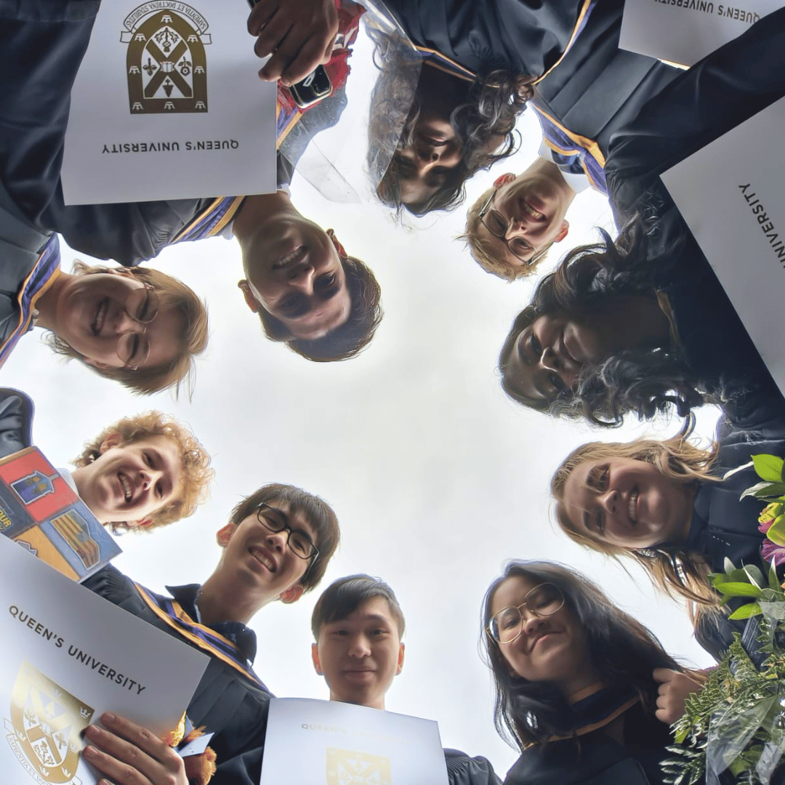

world ain’t ready
The theme of this post is supposed to be overcoming things that held me back, and I could never quite phrase it the way I wanted. But as Veritasium told me - done is better than perfect. As such you can read the long, drafty, and nonetheless truthful blog post about my undergraduate experience here.
I often doubt myself:
in first year, during COVID, where my first university classes were online in my room, when I didnt know what Github and Rest APIs were, and when I didnt know I was supposed to be looking for a summer internship yesterday
in second year, living on my own for the first time, when my mental health finally collapsed under a course overload
in third year, running an entire student association, managing an AI team project for the first time, looking for internships, and taking my self-nominated hardest course ever (information theory)
in fourth year, after a turbulent summer of the highest and lowest I’d ever been, off the back of failures that knocked my entire university plan off course, where I no longer had a clear goal or state of mind or sense of self
Even when I am told to my face that my accomplishments are impressive, I dont believe it. I think if I can do something it must be easy.
Completing a degree is not easy.
As I drove away from Kingston for the last time, I thought about how my final year became two years, then another two months, then another two weeks - and after two days, I came back for another two hours. My remaining belongings were split between two houses, and two friends rushed over just to see me off. I could not have stayed as long as I had without feeling supported, and I would not have received that support had I not postiviely impacted people.
I thought about when I told someone, ‘I am nothing if not an enabler’. They said I was wrong, that I shouldn't discount everything else I was - for example, a degree haver. But for me, it was one of the few things I accepted about myself. I thought about how much I enjoyed helping others succeed - from being there for my friends’ problems to helping complete strangers fill out their first year class schedules. I thought about the students who gained connections with professors at coffee chats I ran through COMPSA, and the students that I taught the basics of AI to in QMIND.
And then I realized it’s because I enjoyed and helped others so much that I received the same kindness back. I found spaces where I was confident and didnt doubt my skills, and found friends who reassured me every step of the way. The most important realization was that I created that life for myself - and I could not have done it without first wanting to see others succeed.
Now, even with a degree (finally!) that proves my capabilities, I still doubt myself. But those years of work are so much more than a specialization in computing and math. I doubted whether I could graduate, whether I was even in the right program. I doubted lots of parts of myself. But the part I never doubted was my desire to see others succeed. In fact, it was so innate that I never understood that that desire was what pulled me through my degree - until the very end
Fittingly, I have a long list of credits to which I also owe my degree:
To QMIND: in my first year for believing in me when I didn't, in my second year for introducing me to global leaders who still inspire me, and in my third year, where my design team deserves a post all on their own merit, and for letting me give back to the entire Canadian undergraduate AI community by hosting CUCAI. This club is the reason I am where I am in my career, and has allowed me to find my little place in tech where I feel passion and excitement
To COMPSA, for giving me constant community, always, without fail. I found out that bringing people together is something I both enjoy and am good at. I loved seeing the immediate impact we could have even if we helped only one student. I cared, and I was surrounded by people, who, despite the demands of a cs degree, still volunteered time to also care for others. I met and learned from so many students during my four years in compsa. It reminds me that helping others is always valuable work, and by doing so, I provide value to the world, even if just in a small community
Finally, to the entire Computing community, for bringing out the best version of myself. I always say CASLAB has seen the best and the worst of us. Being a Tech taught me to teach, and being a Trosh taught me to get out of my comfort zone. In my last speech as VPO, I shouted out the class of ‘23 for being leaders we could look up to, the class of ‘24 for our resilience, the class of ‘25 for their dedication and discipline, and the class of ‘26 for being sparks of a bright future in Computing. I still believe in that now. The ‘23s are still personal examples. the ‘24s are still kicking. the ‘25s still inspire and uplift me. And I was right about the ‘26s, who are now setting examples for the ‘27s and ‘28s. These people have made a home in my heart.
I wouldn’t be where I am without the professors of the School of Computing as well:
To Professors Christian Muise and Yuan Tian, who wrote the recommendations that ultimately got me into the Master’s program I’d always wanted, thank you for being the roots of everything I know about AI and data science
To Professor Randy Ellis, my capstone supervisor, thank you for teaching at the intersection of computing, math, and its applications in all sorts of places. You inspire me to find my own path and keep learning for the sake of learning
To Professor Ting Hu, who taught my first ever Computing course (basically CompSci 101), as well as the most essential one (algorithms), thank you for giving me the foundation of my degree (and for my favorite undergrad lecture ever (P vs. NP))
In a few weeks I’ll be off on a new adventure, filled with many new places, people, languages, and things to learn!
Finally, to my dear friends, I am so glad to have shared this adventure with you. Thank you for staying with me through and in spite of my worst. There is so much more to say but I can’t be here forever.